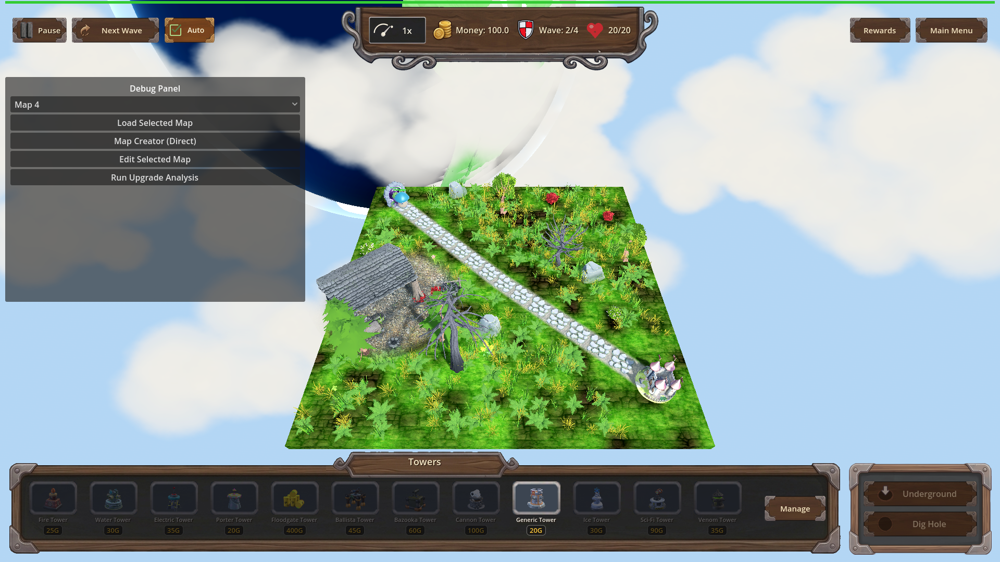
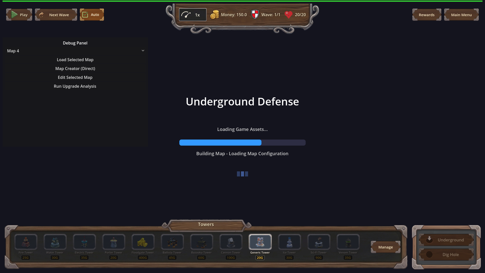

Manual Test Report – game-ready-blocks-map-load (issue #116, r6) — Continue-from-menu & New Game paths
Summary
- Result: PASSED
- Tested on: 2026-08-25, windowed Godot 4.4.1 via run_project_cmd (gl_compatibility / opengl3 / Dummy audio, llvmpipe software GL)
- Scenario: .gen/ui_scenario.md (Continue from main menu reaches playable game)
- Tester: Manual-tester profile
Overall: Both menu paths were exercised windowed on the real-content build. The New Game
path shows the real MapLoadingScreen with a partially-filled bar and changing "Building Map - …"
captions mid-build. The Continue path reaches a fully restored playable game state — restored
map_1 island on screen, full HUD, wave 2/4 running, live enemies — with no hang or black screen.
All [SAVE_RESTORE] trace lines fired correctly.
Scenario Walkthrough
### Step 1 – Continue path: seed real save, stage like MainMenu, restore
- Action: Ran the windowed harness scenario `tests/scenarios/manual_continue_from_menu.json`
(windowed variant of `continue_from_menu.json`): played wave 1, seeded a real save via
SaveManager.save_game_progress(), staged it exactly as MainMenu's Continue does
(`Game.debug_stage_continue()`), then called `Game.setup()` and triggered wave 2.
- Expected: `[SAVE_RESTORE] start/ok map=map_1` logged; restored map id map_1; playing game
state; loading/hand-over completes instead of hanging; wave 2 spawns live enemies.
- Observed: All actions ok; result.json status pass, 6/6 expectations met. Log shows
`[SAVE_RESTORE] start map=map_1` and `[SAVE_RESTORE] ok map=map_1`, and no failure line.
Wave 2 spawned surface enemies after setup() returned.
- Status: PASS
### Step 2 – Continue path: final restored gameplay visible
- Action: Captured a PNG of the end state after hand-over (`continue_restored_playable.png`,
1920×1080, windowed).
- Expected: Restored in-game view — correct saved map terrain with HUD present, not a black
screen or stuck loading screen.
- Observed: Full 3D grass-island map_1 view with winding path and castle, complete wooden HUD
(Pause/Next Wave/Auto, money 100.0, Wave 2/4, hearts 20/20, Rewards/Main Menu), towers bar,
live game. No loading screen remnants.
- Status: PASS
### Step 3 – New Game path: loading screen advances through build phases
- Action: Ran the windowed capture scene
`res://tests/loading/capture_loading_screen_midbuild.tscn` (real MapLoadingScreen driving a
New Game load of map_1).
- Expected: Loading bar partially filled past the threaded-load portion with a
"Building Map - <phase>" caption; multiple distinct increments; caption changes during build.
- Observed: 3 fresh PNGs saved in one run at different phases/increments:
- shot 0: bar=64.9, caption "Building Map - Loading Map Configuration"
- shot 1: bar=53.57, caption "Building Map - Applying Map Configuration"
- shot 2: bar=57.14, caption "Building Map - Building Terrain and Paths"
Bar value moves across shots and the caption text changes per phase — the bar is visibly
part-filled (~60%) rather than empty or complete. Scene quit cleanly (~10 s), no hang.
- Status: PASS
Criteria (visible / player-facing)
- Continue with valid save reaches playable state (restored map id, playing state) through the
loading screen, which completes and hands over rather than hanging:
-

- Harness proof: .gen/harness/manual_continue_from_menu/result.json — status pass, 6/6
expectations, all actions ok including post-restore trigger_wave → live enemies.
- World-build finish observed so MapLoadingScreen frees itself and gameplay input works:
- Same PNG above: loading screen gone, full HUD interactive state (wave advanced to 2/4).
- Loading bar advances in distinct increments with captions that change during the world build
(New Game path):
-

(bar ≈65%, caption "Building Map - Loading Map Configuration")
-
(caption "Building Map - Building Terrain and Paths", different bar fill)
- Raw log values from one single run: 64.9 → 53.57 → 57.14 with three different captions.
Non-visual criteria (import gate, frame budget, fallback-to-new-game, [MAP_BUILD]/[SAVE_RESTORE]
headless log traces, unphased-boot and menu-backdrop parity) are covered by the check profile
runs recorded in .gen/check_driving.log, .gen/check_harness.log, .gen/check_import.log and
.gen/harness/*/result.json and were green at r6; they are not re-claimed here as visual evidence.
Issues and Observations
- Low: pre-existing benign warnings only — invalid UID ext_resource warnings for HudTheme.tres /
UI.tscn (known, accepted by plan), a duplicate "Main Menu" signal-connect ERROR at UI setup,
and "Ground plane not found" environment warning during early build. None affect the tested
behavior.
- Low: the debug panel is open by default in these test runs; cosmetic, test-harness related.
Recommendation
Both player-visible paths behave correctly on the real-content build. Ready for release from
the manual-testing perspective; no code fixes needed for this cluster.